Most of it is (1) chores, (2) code-adjacent — which means errors happen and debugging isn't fun — and (3) obviously automate-friendly in the age of agents.
Professional line · non-negotiable
Student work never goes near an LLM.
No uploading quizzes, exams, homework submissions, or rosters.
No agent computer-use for grading — do not hand the mouse to a model over identifiable student work.
Privacy and professionalism first; automate my artifacts, not theirs.
Mode C — Research
AI is a fast-prototyper and a verifier here.
I stay the author of the mathematics.
Two jobs: describe the algorithm in prose and let the agent code it — then adversarially audit what it hands back.
Multigrid, BSAM, diffuse-interface PDEs.
Q-learning / DDQN for lattice optimization.
MPI parallelization.
Dissertation typesetting.
151verification prompts — 1 in every 10 I send to Claude
38prompts that cite my advisor's spec as ground truth
Claude
OK, here is a linearized q-learning model to find the lattice of minimum energy via pairwise atom swapping. Now, we have to abandon some of the features unfortunately. Anything “energy” and “forces” related needs to be deleted. The reason is, those information are expensive to compute. For the Lennard-Jones, it is not too bad, but eventually we will move to calculate the energy of the whole lattice via a GNN model, which will not output energy experienced and forces acting on each individual atoms. So, we need to rethink how to design the features.
Please do not code up anything first. Just help me brainstorm. Give me a proposed list of feature in a table, giving me both the method of how to compute the feature, and also estimate the computational burden (light/medium/heavy).
In research, I audit every claim. You cannot outsource the thing you are producing.
Mode C — Fast prototyping
I describe the numerics in prose. The agent writes the MATLAB.
The MDP, the discretization, the stencil — mine. The code — transcribed.
Describe the PDE. Describe the scheme. Describe the output format.
Ask for one script. Run it. Look at the plot.
Where it's wrong, teach the part it got wrong — not re-ask from scratch.
The speed-up is real: a first working prototype in one lunch, not one weekend.
I own the algorithm. AI owns the transcription. Same posture as the advisor-student contract: math is mine; code is a deliverable.
Pattern across claude.ai (Q-learning MDP redesign, Dec 2024), Codex (Fortran→MATLAB BSAM port, 2025–26), and Gemini (two-sided ODE solver, this deck's slide 29 example).
Gemini · turn 1 (opener)
I want you to help me write a numerical ODE solver with cell-center finite difference. The code, in MATLAB, will first construct the stiffness matrix, the forcing vector, and form the system Ax=b. Then the numerical solution is computed using the backslash operator x = A\b.
Let Ω=(-1,1) be the whole domain. Split it into Ω_L=(-1,0) and Ω_R=(0,1). On Ω_L, -u_L''=0 (Laplace). On Ω_R, -u_R''+γ u_R=q(x) (elliptic). At the interface x=0: continuity plus the transmission u_R'-α u_L'=λ+κ u_R. Neumann at x=±1.
Plot the solution as well. Give me one single MATLAB script.
Verbatim · two-sided ODE opener, Gemini · full math spec in one turn
What came back: a single working MATLAB script. Turn 3 onward is where I audit — see slides 29–30.
— Fast prototype of numerics.
— Plotting, parallelization.
— Deployment.
— Fast-prototyper & verifier.
— Math from me.
— AI transcribes, then audits.
AI is expanding the radius of what is adjacent to my mathematics.
That changes what kind of scientist I can become.
A second-order effect I care about
Teaching is a responsibility, not my primary research target.
AI compresses the chores — tidying notes, drafting worksheets, wrangling LaTeX.
The hours come back to research, or just to life.
Part III · The practice
Things I fully offload to agents.
Not every task is a PhD task. When the output isn't load-bearing on my mathematics,
I hand the whole thing over — prompt, draft, figure, compile.
Offload · TikZ figures for lectures & worksheets
I describe the figure in prose, and the model writes the TikZ. It's been a while since I tried to make a TikZ plot by myself.
ChatGPT
This is the rendered plot. I want you to make changes:
1. For the function, use f(x) = 1 + 5·x·e^(-0.4x). Draw tick marks at x = 0,1,…,10, but don't label them numerically.
2. Draw 10 rectangles for the intervals [0,1], [1,2], … [9,10]. For the first 4 rectangles, red stripes. For the last 6, green shading.
3. Label below x = 3,4,5,6 as k−1, k, k+1, k+2, then \cdots for the rest.
Verbatim · MATH 142 lecture slide, integral test figure
Tip. Give the plot as much detail as you can. You're essentially drawing by natural language — the clearer and more detailed the instruction, the nicer the output.
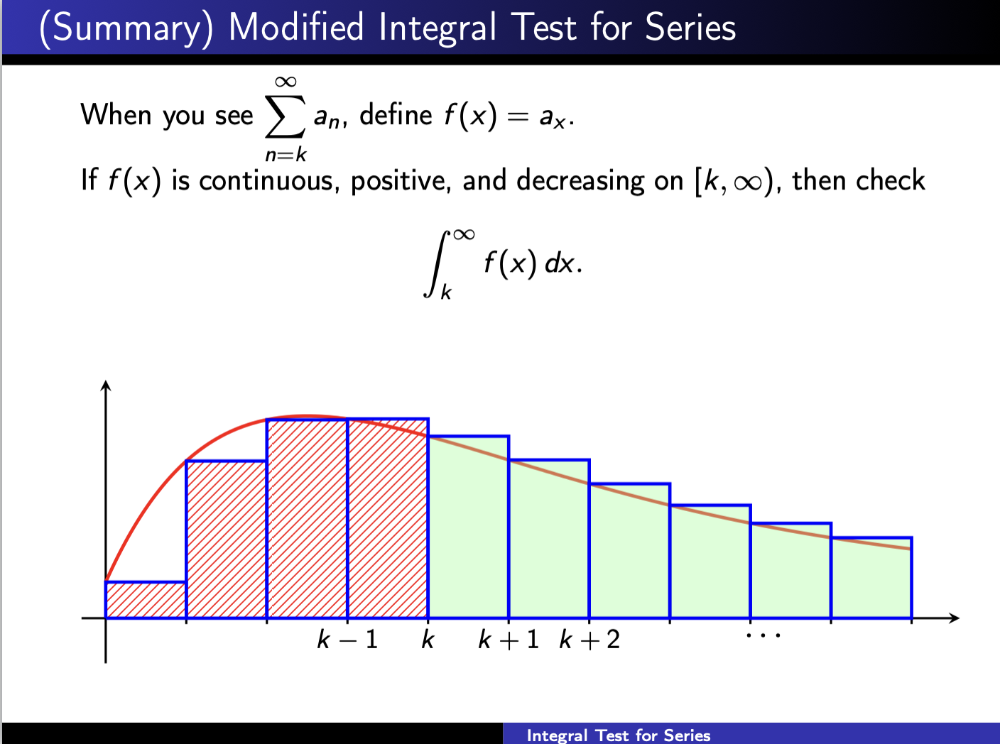
Result, dropped directly into the lecture deck. Dropped into the deck as-is.
Offload · Tutorial problems from a napkin sketch
I photograph a handwritten scratch — the cone, the shell formula, the setup —
and ask for a three-part tutorial question with solutions in my style.
Multimodality saves me from re-typing what I already worked out on paper.
ChatGPT · vision
I want to write a tutorial question on Volume of a frustum. Let y = −H/R·x + h, where 0 < h < H.
Part (a): ask the student to express x* in terms of h.
Part (b): ask them to explain why f(x) is that piecewise function.
Part (c): ask them to use the shell method to find the volume. Give them the final formula for checking.
Make some good TikZ graphs, 2D and 3D, for illustrations. Copy-paste-ready LaTeX.
Modern LLMs are all multimodal — you can hand them a photo of your paper notes and they'll read the math.
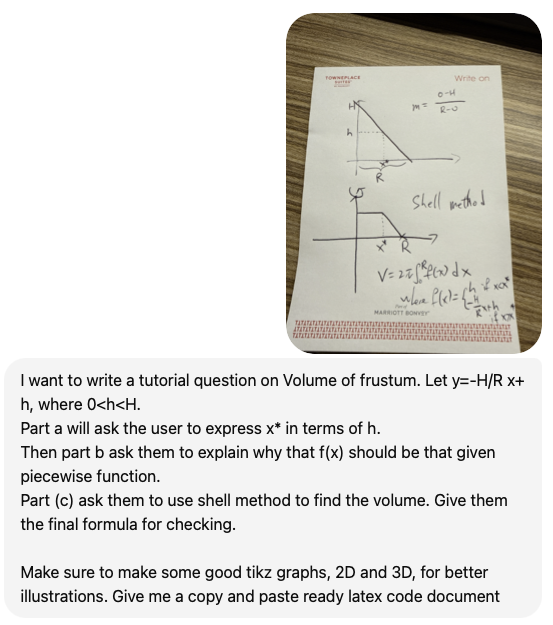
Input: a hotel notepad. Output: a LaTeX worksheet with solutions I can spot-check.
Offload · Tutorial problems — rendered output
One practical setup
Install a local LaTeX compiler. Let the agent write the .tex and compile it.
Then your job is just to look at the rendered PDF and say what to change.
The loop gets short: describe → compile → read PDF → iterate — no copy-paste back to the chat.
Tip. Ask the agent to convert each rendered PDF to a PNG with Python, then read the image back. It can then self-correct positioning and sizing of text and figures.
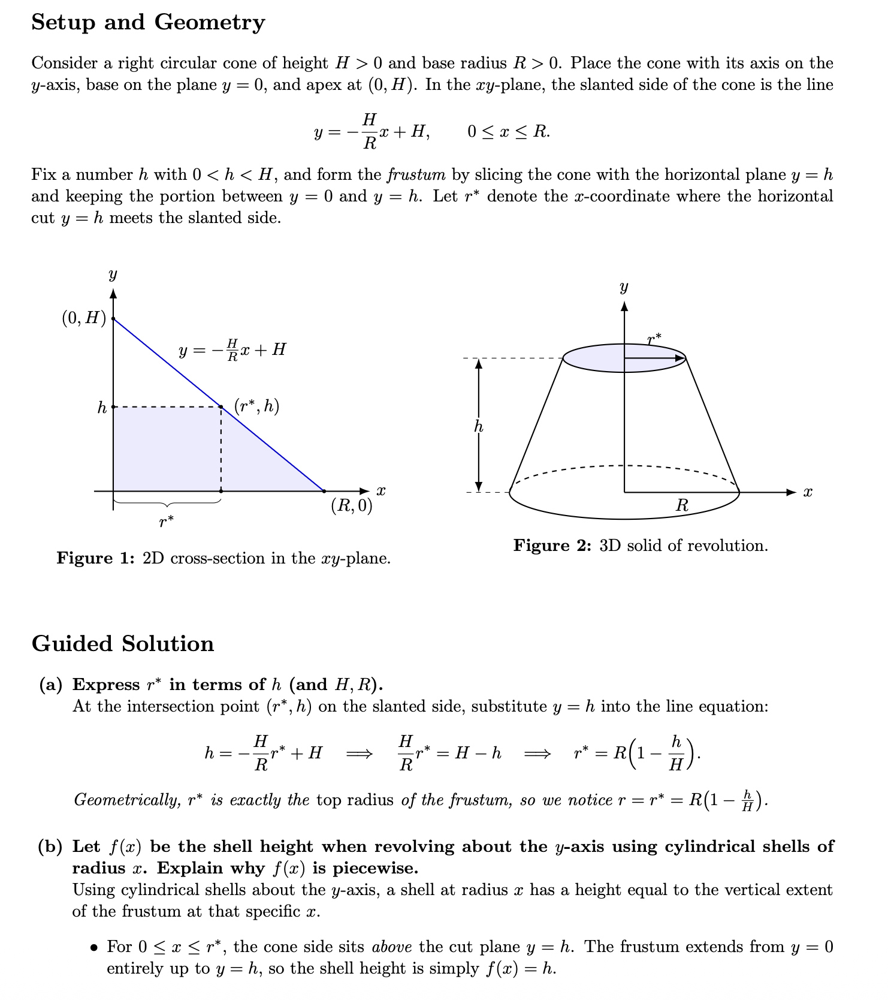
Final PDF, auto-compiled locally. The agent owns the round-trip.
Offload · Agents & commands for recurring workflows
For a whole semester of tutorials, one-shot prompts aren't enough.
I built a tutorial-generator agent and a /generate-tutorial command
that read my instructor's lecture notes, match his notation, and write questions
in his style — consistently, across weeks.
.claude/agents/tutorial-generator.md
Opus agent — reads lecture PDFs, matches notation, writes in the instructor's voice
Convert PDFs to images, read with vision, catalog demo problems to avoid duplication, generate originals at a 40/40/20 difficulty split, delegate figures to tikz-grapher, verify numerics in Python, hand off to layout-proofreader for final fixes.
.claude/commands/generate-tutorial.md
Sonnet command — one-shot entry point with a week argument
Takes a worksheet name, pins the tool allowlist, and dispatches to the agent. The command is the muscle memory; the agent holds the craft.
Aside · What are skills, agents, and slash commands?
If you've typed the same preamble twice, you're ready for one of these. And —
you don't write them from scratch. You ask the agent to write the agent.
agents/*.md
Subagent
A specialist you can delegate to — its own system prompt, tool list, and model choice.
Summoned from inside a bigger task. Think: “spawn a proofreader”.
A named shortcut to a long prompt, with arguments.
Lives in your repo. Runs the same way every time.
Think: macros, but written in English.
/generate-tutorial Week7 # expands to the full 6-phase # recipe — phases, tools, QA
Claude · Skills
Skill
A packaged capability the model loads on demand — prompt, examples, helper scripts.
Ships with the assistant; you can also author your own. Think: a teachable habit.
# e.g. built-in skills: make-a-deck export-as-pptx save-as-pdf
The meta-move: “Here's a rough workflow I keep repeating. Write me an agent that does it.”
The agent writes the markdown; I review and commit.
Offload · Style match, not just content match
Instructor's lecture slide · MATH 142
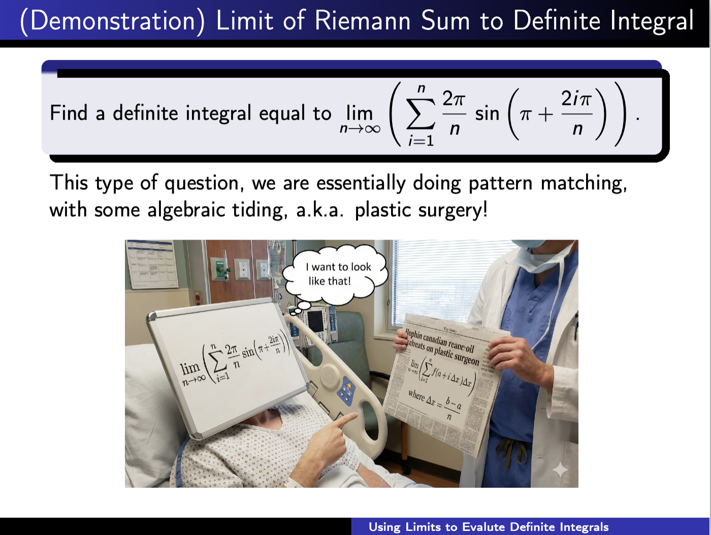
His phrase: “pattern matching”
(followed by his own joke — plastic surgery).
Agent-generated solution · Week 2
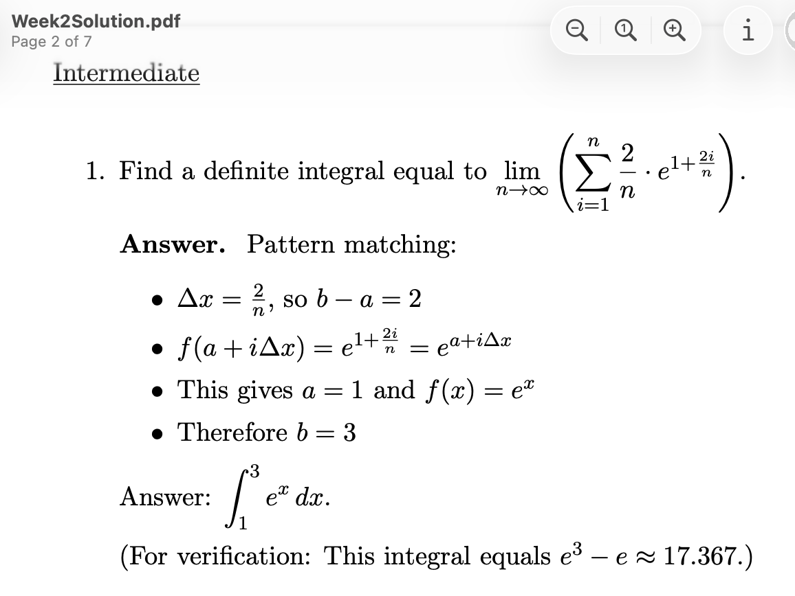
The agent opens its answer with the same two words —
“Pattern matching:” —
because that's what the lecture notes called it.
The agent read the lecture PDFs first. It picked up not just what to teach, but how the instructor talks about it.
Offload · Claude Design — I built this deck with it, not Beamer
Same project · files + agent building generate-tutorial.md
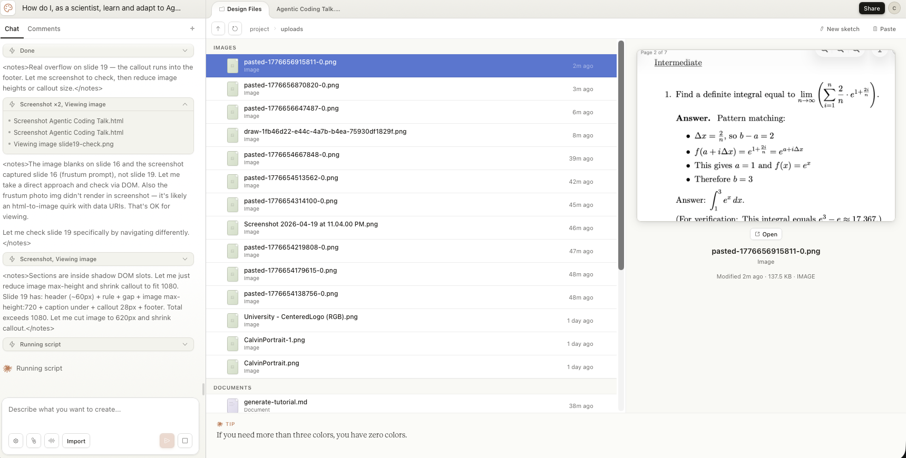
Same workspace that writes my tutorials renders my slides. Multimodal in, artifact out — HTML/CSS/JS, no LaTeX class to fight.
Preview pane · the cover slide you saw at 00:00
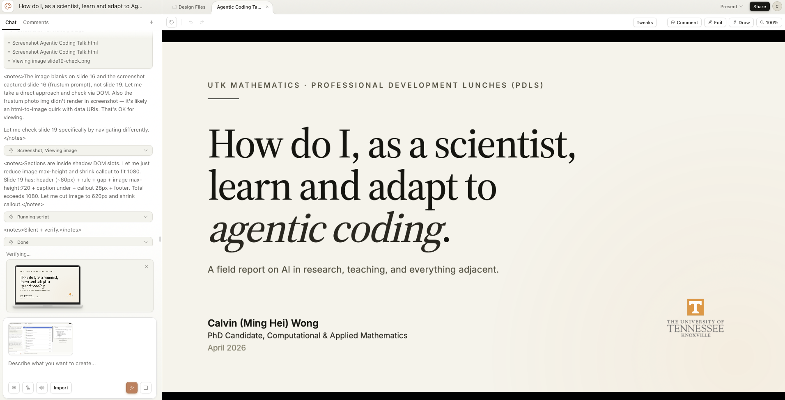
Everything you're looking at — type, rhythm, the frustum figure, the chat mock — this file. One conversation, one living document.
New this year: a Design mode that treats slides, posters, and prototypes as first-class outputs. Versatile (decks, videos, interactive figures), and the default aesthetic is good enough that I stopped reaching for Beamer.
Utilities Prototyping · one-off build, when I run out of the real thing
I ran out of Claude Design usage mid-deck and still needed to finish these slides.
So I built a local clone of the designer — same slot-based slide engine, same one-file output, ran through Claude Code instead.
Claude
I want you to build a quick UI that I can use to see each page rendered, with a comment field on the right of each page. I should be able to put comments, mention files in this folder, and when I'm done commenting for one iteration, click Generate — then a markdown file is produced that I can ask you to read and apply changes from.
There are a lot of dynamic elements in the webpage built by Claude Design — the navigation bar and such. Make sure we keep those fancy features, and mimic the way slides are created currently when we're making changes.
Verbatim · what you are watching right now, bootstrap prompt · Claude Code CLI
Pattern
Hit a rate limit → describe the tool → agent builds the tool.
The point isn't the clone. It's that the cost of “I guess I'll just build my own” collapsed from a weekend to an afternoon.
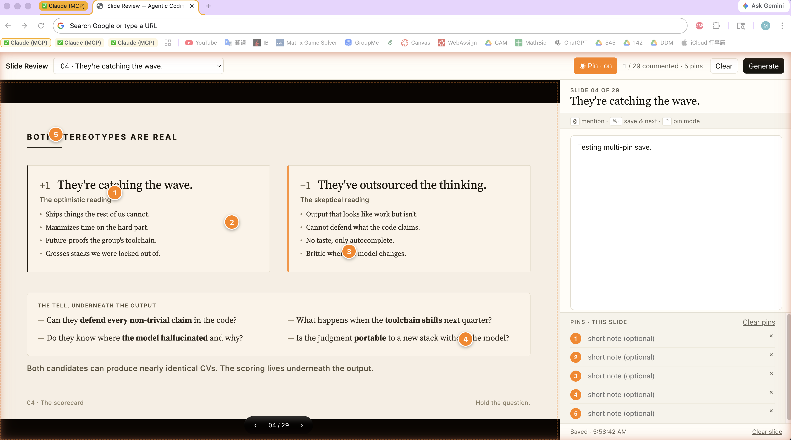
Local clone · this very deck is being reviewed in it right now.
Utilities Prototyping · deep builds for tools I'll reuse every semester
The other mode is longer-lived. I'm building an AI grader with open-source OCR
(PaddleOCR-VL) plus an LLM head, aiming to replace Gradescope for my sections —
student work never leaves my machine.
Pattern
Reusable tools get the full engineering treatment — with AI doing the unfun parts
Different playbook than the one-off: longer spec, test harness, versioned agents, careful handling of the depth boundary (rubric is mine, page parsing is automated).
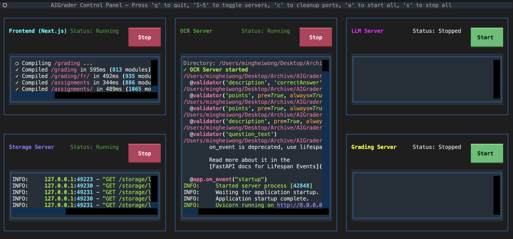
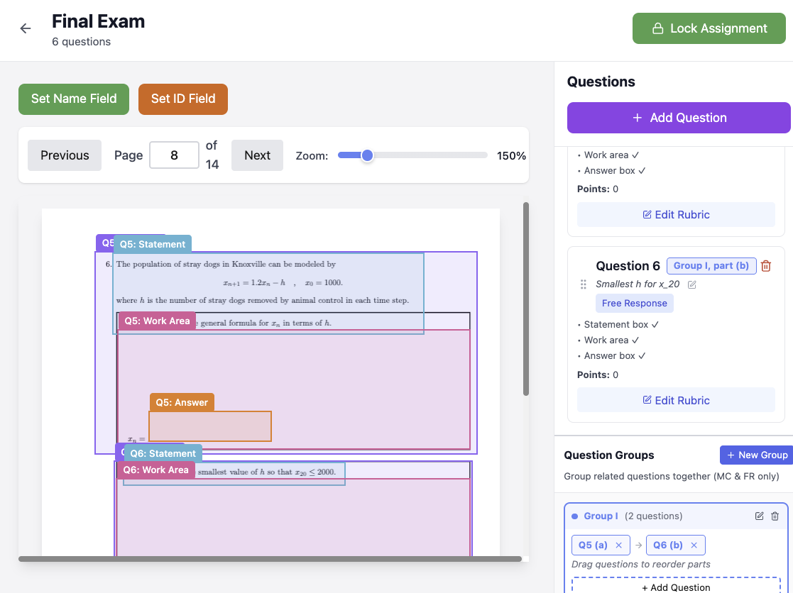
AI grader · OCR + rubric applied to real submissions, on-device.
Part IV · The register
How I prompt.
Context first. Invariants with reasons. Brainstorm before code.
The voice I use with an AI is the voice an advisor uses with a student.
How I prompt · Frame the problem like you'd brief a grad student · high-level
The whole problem, stated in one page, before a line of code.
Tidied grid I later rendered for the talk · $N+2$ unknowns, inner ghosts at the interface.
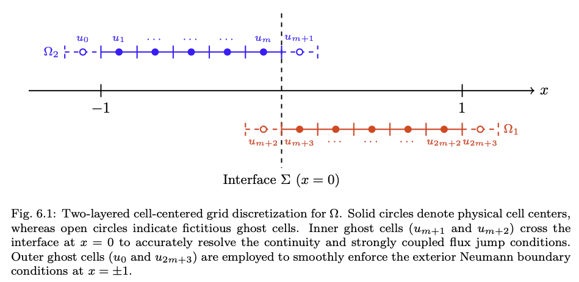
High level first. Domain, PDEs on each side, continuity, transmission, boundary. The advisor writes the problem statement — the scheme comes on the next slide.
Gemini
I want you to help me write a numerical ODE solver with cell-center finite difference.
The code, in MATLAB, will first construct the stiffness matrix, the forcing vector, and form the system $Ax=b$. Then the numerical solution will simply be computed using the backslash operator $x=A\backslash b$.
Here is the problem:
Let $\Omega=(-1,1)$ be the whole domain. Now, we split it into two sub-domains: $\Omega_L=(-1,0),\;\Omega_R=(0,1)$.
On $\Omega_L$: $-u_L''=0$ — the Laplace equation.
On $\Omega_R$: $-u_R''+\gamma u_R = q(x)$ — an elliptic problem.
At $x=0$, the interface, we first have the continuity condition: $u_L(0)=u_R(0)$.
Then the transmission condition at $x=0$: $u_R' - \alpha u_L' = \lambda + \kappa u_R$.
Lastly, at $x=\pm 1$ we have the Neumann condition.
How I prompt · … then hand over the non-trivial implementation details · low-level
Gemini
Here is the numerical scheme I am proposing. Let $N$ (must be even) be the number of cell-center grid points on $(-1,1)$. So $h=2/N$ is the mesh spacing. Interior points are equally spaced with $x_1=-1+h/2$ and $x_N=1-h/2$.
Convention
Fix the geometry first: even $N$, mesh $h=2/N$, cell-centered grid.
Gemini
However, the linear system will have $N+2$ unknowns, because we use $N/2+1$ points for $\Omega_L$ and $N/2+1$ for $\Omega_R$.
Non-trivial
Double-count at the interface. The model cannot infer this from the PDE.
Gemini
For $N=8$ the picture shows 10 unknowns: $u_1\dots u_5$ on the left, $u_6\dots u_{10}$ on the right. $u_4$ and $u_6$ share the same $x$; $u_5$ and $u_7$ share the same $x$.
Pin it with $N=8$
Concrete example + visual (image.png) kills ambiguity.
Gemini
Continuity as averaging: $\tfrac{1}{2}(u_4+u_5)=\tfrac{1}{2}(u_6+u_7)$, i.e. $u_4+u_5-u_6-u_7=0$.
Discretization trick
Average across the two inner ghosts to realize $u_L(0)=u_R(0)$.
I hand Gemini the exact matrix row, not a description of it.
Gemini
Interior points: standard $(-1,2,-1)$ stencil. At $x=\pm 1$ the Neumann condition is absorbed via ghost cells $x_0, x_{N+1}$ — we never carry them as unknowns.
Boundary handling
Ghost cells are absorbed into the stencil; the system stays $N+2$.
Gemini
Driver: define $\alpha,\gamma,\kappa,\lambda,q(x),N$ at the top. Assemble, solve with backslash, then extract the 8-point physical solution by dropping the redundant interface copy — e.g. $(u_1,u_2,u_3,u_4,u_5,u_8,u_9,u_{10})$. Plot. One single MATLAB script.
Deliverable spec
User-defined vs. derived parameters, extraction rule, output format.
Verbatim · Turn 1, second half · grouped per advisor-move so you can see what I'm teaching Gemini.
Multimodal inputs (all attached to the same prompt)
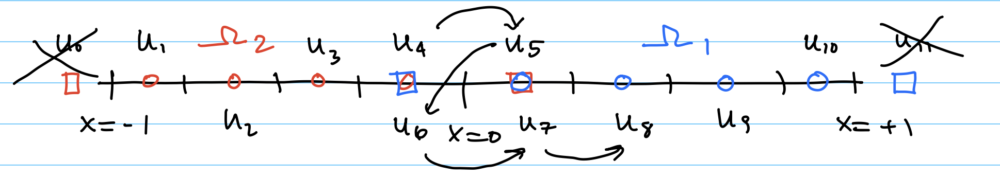
image.png · grid sketch
tidied TikZ (audience)
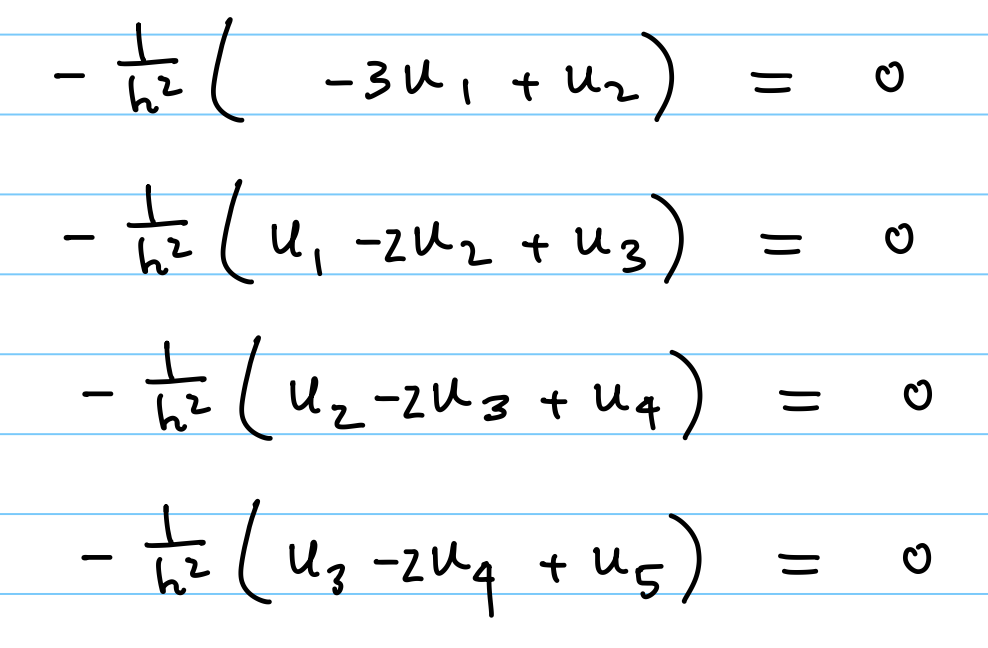
image-1.png · $\Omega_L$ rows
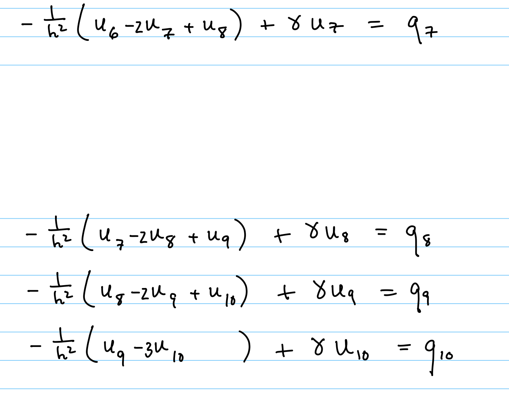
image-2.png · $\Omega_R$ rows
The pair of slides, together, is the move: high-level spec on the previous slide — “here's what the problem is.” Low-level recipe here — “here's exactly how to discretize it.”
Gemini isn't asked to invent the scheme. It's asked to type it.
How I prompt · Audit against a physical invariant, not against the compiler
The first plot Gemini produced
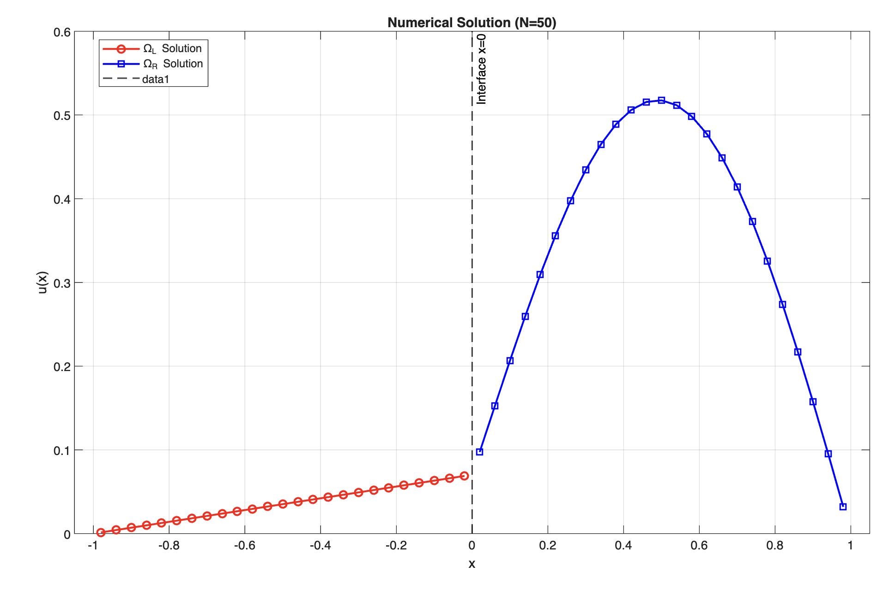
The code compiles. The plot renders. But $-u_L''=0$ with Neumann at $x=-1$ forces a constant on $\Omega_L$ — the red line shouldn't slope.
Gemini
This is the solved solution. I can tell it is not following our equations, because the solution on $\Omega_L$ should be a constant function.
Check and make sure your stiffness matrix assembly and forcing vector follow my logic strictly. In particular, only $x=-1$ and $x=1$ use the $(3,-1)$ stencil; every other interior point uses the $(-1,2,-1)$ stencil for the second derivative.
Verbatim · Turn 3 · spotting the wrong physics before opening the code
“I could have run unit tests. The physics is the test.”
How I prompt · Teach the model the derivation; don't re-ask the question
Gemini
OK, I know why you are confused. $u_1$ corresponds to the grid point $x = -1 + h/2$. $u_0$ is a ghost cell at $x = -1 - h/2$ we do not solve explicitly.
So, if $u''=0$ at $x=-1$: $-u_0 + 2u_1 - u_2 = 0$. But $u_0 = u_1$ by Neumann, so $-u_1 + 2u_1 - u_2 = 0$, i.e. $u_1 - u_2 = 0$.
Can you check similarly for $x=1$, and correct the code?
Verbatim · Turn 4 · re-deriving the Neumann stencil from ghost cells
The advisor move
Re-derive the step, don't re-paste the question.
Gemini had deferred to a $(3,-1)$ stencil from my handwritten note — which was actually a Dirichlet coefficient, not Neumann. Instead of saying “redo the Neumann,” I walked through the ghost cell, the substitution, and the resulting $u_1 - u_2 = 0$ equation. Then asked it to mirror the derivation at $x=1$.
# what this replaces: “no that's wrong, fix the left Neumann”
# what it produces: the model generalizes the method, not the patch.
How I prompt · The bug that isn't syntactic
Goal: measure asymptotic convergence as $\alpha \to 0$ — the "relaxed" transmission limits to the sharp interface.
Symptom: L2 Slope: NaN. Every $\alpha$ gave the same solution.
for s = 1:n_samples
alpha_param = alpha_list(s); % recomputed every iteration: lambda = val_duR_0 - alpha_param*val_duL_0 - kappa*val_uR_0;
...
Gemini
I think I understand why.
$\lambda$ depends on only the sharp interface solution, not changing with $\alpha$.
If we recalculate $\lambda$ for every $\alpha$ to match the manufactured solution, we are solving the same physical problem on different grids — effectively hiding the $\alpha$ perturbation we want to study.
Verbatim · Turn 10 · the conceptual bug, found by me, not the compiler
One line. Zero error messages. Finding it requires knowing what the study is for.
How I prompt · Don't let the model launder the physics
Gemini's workaround — swap the reference solution so the test “works”
When a model edits the spec to make the test pass, that isn't a test — it's a lie.
The advisor move: reject the hack, keep the spec. The convergence study only means something if $\alpha$ is the only thing moving.
Gemini
Why are you changing my reference solution? It should be the constant function.
Turn 14
Gemini
But the problem is, I know the fact that $u_L = 0.1x + 2$ is not a solution to the sharp interface problem at all.
Turn 16
Gemini
OK, I know what you screwed up. Let's go back. We compute the coefficients and forcing function ONCE, at the beginning, and feed them to the solver. Then we let the linear system do the work. You are overcomplicating it.
Turn 17 · diagnosing the overcomplication
How I prompt · Rigor practices
151verification prompts across 1,632 — roughly one in every ten.
Triangulate across models. Never treat one AI as oracle.
Push back on over-engineering. Correctness ≠ acceptability.
Ground truth is the advisor's code, the derivation, the paper.
Claude
Remove the for loop (the inner loop). Now, instead of swapping atom j with atom i, where I is the for loop index, we now define atom I to be the atom that has the lowest Q-value in the current lattice.
Before you give me the code, please try to explain on what I just said. I want to make sure we are on the same page first.
Verbatim · Q-learning swap refactor, Nov 7, 2024 — the money-quote of the corpus
Tip. CLI coding agents from different companies can call each other via official plugins — e.g. OpenAI ships a Codex Skill for Claude Code. Even without plugins, every modern CLI agent is headlessly callable via bash, so you can pipe one into another.
Triangulate. One model reviews another; a third adjudicates.
Two composer styles, for two tools. By the fourth time you see them, you recognize the posture.
Claude
I pass the code to another AI, and he made the following comment. Can you check each point, and see if you agree? If yes, make the appropriate changes. Output me the fully changed code. …
ChatGPT / Codex
I asked another AI and see if they can see the problem. Here are their replies. Can you analyze their replies, and see if it make sense at all? Do not modify the code yet, just analyze their comments first.
Both verbatim · MPI deadlock cross-examination, 2024–25
Four operating principles
01
Math is the ground truth.
The paper, the advisor's code, the derivation. Not the model's answer.
02
AI is peer review, not an oracle.
It can be wrong. You can push back. You should.
03
Concrete beats abstract.
Point at the symptom; give it a specific place to look.
04
Infrastructure beats repetition.
If you type the same instructions twice, put them in a file.
Back to the question we opened with
The question isn't whether “agentic coding” adds or subtracts points.
The question is whether the candidate has treated AI as a shortcut
or as an amplifier of existing depth.
You can tell which by looking at whether they still own their mathematics.
Part V · The takeaway
One test. Not a verdict.
What I look for in a candidate — or in myself — when the CVs all look the same.
Takeaway
AI collapsed the cost of breadth.
Depth is still a PhD's job.
Use the first to make the second go further.
Thank you
Questions?
Happy to hear counter-examples — domains where this framing doesn't hold up. I'm sure there are some.